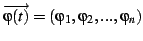
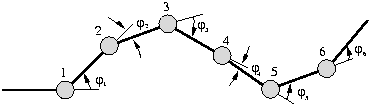
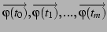

Next: 2 Automatic generation of Up: 3 Locomotion Previous: 3 Locomotion
Each articulation is characterized by the angle between the two segments
it links. The shape of the worm, at a given instant  , is determined
by the angular position vector
, is determined
by the angular position vector
![[*]](crossref.png) shows a six articulations
worm-like robot and the angular position vector at a given time.
shows a six articulations
worm-like robot and the angular position vector at a given time.
|
 |
For every instant, an angular position vector there exist, determining
the shape of the worm:

In robots like Polybot, this tables are pre-calculated and downloaded into the modules. Each table represents one gait. It is not possible to calculate or store all the possible tables for all the different gaits. Those tables are generated automatically in Cube.
Juan Gonzalez 2004-10-08